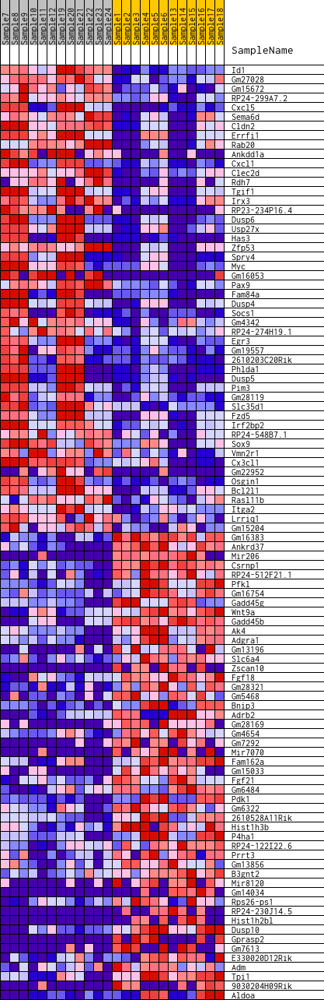
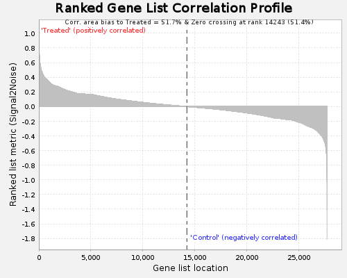

Fig 1: heat_map
Heat Map of the top 50 features for each phenotype in Condition_treatment_Control_Treated_collapsed_to_symbols.Condition_treatment_Control_Treated.mh.all.v2022.1.Mm.symbols.Condition_treatment_Control_Treated.cls#Treated_versus_Control

Fig 2: Ranked Gene List Correlation Profile
Ranked list correlations for Condition_treatment_Control_Treated_collapsed_to_symbols.Condition_treatment_Control_Treated.mh.all.v2022.1.Mm.symbols.Condition_treatment_Control_Treated.cls#Treated_versus_Control